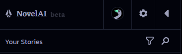
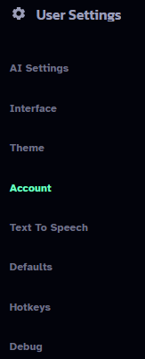
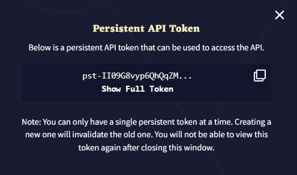

#
NovelAI
NovelAI 是一个付费订阅服务，允许每月无限制访问他们高质量的内部文本生成、图像生成和文本转语音模型。在此注册账户以开始使用：https://novelai.net/
你只能获得 50 次生成 的免费试用来评估模型。当出现 "Not eligible for this model" 错误时，这意味着你已经用完了试用期，需要订阅付费计划。
#
API 密钥
要获取 NovelAI API 密钥，请按以下步骤操作：
选择左侧边栏顶部的齿轮图标。
 Left Sidebar 在 "User Settings" 下选择 "Account"。
 User Settings 选择 "Get Persistent API Token"。

Account 点击复制图标将 NovelAI API 令牌复制到剪贴板。
 Persistent API Token
#
模型
如果你订阅了 Opus 套餐，那么 Erato 是最佳选择。如果没有 Opus，那么 Kayra 是最好的可用模型。
Clio 在 Tablet/scroll 套餐下有更大的上下文大小，但 Kayra 的性能通常可以弥补这个差异。
#
设置
设置文件位于这里（SillyTavern/data/<user-handle>/NovelAI Settings）。
你也可以手动添加自己的设置文件。
#
响应长度
你希望每条消息生成多少文本。请注意，NovelAI 每次响应的限制是 150 个令牌。
#
上下文大小
在任何时候保持在上下文中的聊天令牌数量。最大上下文大小取决于模型和你的订阅等级：
- Kayra (Tablet) - 3072 个令牌
- Kayra (Scroll) - 6144 个令牌
- Erato（Opus 专属）、Kayra (Opus) 和 Clio（所有等级）- 8192 个令牌
#
前言
插入在聊天内容正上方的文本，用于修改写作风格。推荐的格式是简短标签列表，如 "[ Style: chat, detailed, sensory ]"。
#
预设描述
根据 Novel AI 的说明，以下是默认预设的适用场景。
#
Erato
- Golden Arrow - 一个全能型预设。
- Wilder - 词汇选择更加多样，重新生成时差异更大，更容易出错。
- Zany Scribe - 避免错误和重复。优先使用更复杂的词汇。
- Dragonfruit - 语言丰富复杂，很少重复。更容易出现错误和矛盾。
- Shosetsu - 为日语写作设计。也适用于英语。
#
Kayra
- Asper - 用于创意写作。期待意想不到的转折。
- Carefree - 一个全能型预设
- Fresh-Coffee - 保持故事在轨道上。很好地处理指令。
- Pro_Writer - 模仿畅销小说的节奏和感觉
- Stelenes - 更倾向于选择合理的替代方案。重试时有更多变化。
- Tea_Time - 开始后会越来越好。
- Writers-Daemon - 极具想象力，有时过于丰富。
#
Clio
- Edgewise - 能很好地处理各种生成风格
- Fresh Coffee - 保持故事在轨道上。
- Long-Press - 适用于创意散文。
- Talker Chat - 为聊天风格生成设计。
- Vingt-Un - 一个偏向散文的优秀通用默认预设。
#
在 SillyTavern 中使用 NovelAI 的提示和常见问题
从其他 ST 后端 API 切换到 NovelAI 时，会出现许多常见问题和疑问。这些差异源于模型的训练目的不同。很可能你之前使用的是 OpenAI 或 Anthropic 模型（或模仿这些的本地模型），这些模型是围绕遵循用户指令而构建的。NovelAI 的模型纯粹围绕文本补全构建：它们不是将你的输入作为消息并制定响应，而是试图继续输入的提示。由于这种差异，适用于其他 API 的许多提示和常识可能不适用于 NAI。
#
调整 NovelAI 的设置
在高级格式设置（A 图标）下：
- 将 "Context Template" 设置为 "NovelAI"
- 将 "Tokenizer" 设置为 "Best match"
- 勾选 "Always add character's name to prompt"
- 勾选 "Collapse Consecutive Newlines"
- 在 "Instruct Mode" 下取消勾选 "Enabled"
在用户设置（带齿轮的人像）下：
- 开启 "Swipes"（虽然不是 NAI 特有的，但非常有用，建议开启）
#
为 NovelAI 构建/调整角色卡
要为 NovelAI 优化你的角色卡，有两种推荐的方法来编写角色描述：散文式和属性式。
散文式简单到让人觉得不可能有效："Sylpheed 是一个看起来年轻但实际上 900 岁的精灵。她身材矮小娇小，有着长长的白发，在她编成侧马尾的发辫处渐变成绿色，眼睛是十字形的祖母绿色。[...]" 没错，就是这样。只需用普通句子写出角色的外貌、行为等，AI 就会理解。
如果你不信任自己的写作能力或想要一个更有结构的方法，可以使用在 NovelAI 训练数据中存在的属性方法。这是一个简单的不同类型角色特征列表。以下是经过测试证明对 NovelAI 模型有效的可能属性：
Name:
AKA:
Type: character
Setting:
Nationality:
Species:
Gender:
Age:
Height:
Weight:
Appearance:
Clothing:
Attire:
Personality:
Mind:
Mental:
Likes:
Dislikes:
Sexuality:
Speech:
Voice:
Abilities:
Skills:
Quote:
Affiliation:
Occupation:
Reputation:
Secret:
Family:
Allies:
Enemies:
Background:
Description:
Attributes:"Type: character" 是用来告诉 AI 这是在描述一个角色（而不是位置、物品或其他类型的东西）。其余的属性是可选的，有些是重复的（例如，Personality、Mind 和 Mental 基本上意思相同），但这些都经过测试，与 NovelAI 的模型配合良好。填写与你的角色相关的属性即可。属性应该用小写字母书写，用逗号分隔，不需要在单词周围加引号。例如：
Skills: lockpicking, stealth, running away very fast推荐这些方法是因为它们存在于 NovelAI 的训练数据中，所以特别适合这个模型。
#
示例角色卡
这里有几个专门为 NovelAI 制作的示例角色卡，展示了不同的创建方法。第一个角色卡 Valka 使用属性方法描述角色，而第二个角色卡 Eris 使用散文描述，并包含大量对话示例。

{kind=link}
#
不应该做什么
大多数现有的角色卡格式都不太适合 NovelAI。它们可能会给你一些结果，甚至一些不错的结果，但存在很多问题。W++ 是最大的问题之一，它与 NovelAI 模型的训练内容完全不同，而且经常使用方括号/大括号/引号消耗了大量令牌，增加了卡片的大小但没有实际好处。
在现有的非 NovelAI 原生格式中，AliChat 最有可能有效，因为它依靠使用示例消息来同时传达角色信息和他们的语气，采用你希望 AI 输出的消息格式。
对于大多数其他格式，由于它们通常是列出特定角色的不同特征的方式，可以相当直接地转换为属性方法。
#
我应该使用哪个模块？
可能是 No Module（无模块）。如果你希望角色说话更加华丽，Prose Augmenter 很有用，但要注意不要过度使用。Text Adventure 可能适用于文字冒险风格的角色卡/故事。
#
不用 instruct 模块吗？
你可以在需要时调用 Instruct 模块。在消息中创建新行，并将指令放在大括号中，如：{ CharName is offended by that seemingly innocuous statement }（文本和括号之间的空格是 必需的）。这样做会自动让 AI 短暂切换到 Instruct 模块。你不会想一直使用 Instruct 模块，因为它往往比其他模块产生的输出创意性更低，只在你需要强烈引导 AI 朝特定方向发展时使用。
#
为什么我的响应总是被截断？
NovelAI 将响应长度限制在总共约 150 个令牌，即使你将滑块设置得更高。当达到滑块中的令牌数或 150 个（以较低者为准）时，它将生成最多 20 个额外的令牌，寻找停止序列或句子结尾，所以响应的有效限制是 170 个令牌，到达这个点时它就会停止，导致截断。
如果被截断，你可以选择继续选项（文本框左侧的三线菜单中）让角色继续他们的响应。
如果你经常想要超过 170 个令牌的响应，可以这样绕过限制：
- 将响应长度保持在 150 个令牌。
- 在高级格式设置中启用 Auto-continue。
- 将 "Target length" 设置为所需长度。
这将链接多个生成以给你更长的消息，但如果模型决定停止，不能保证回复一定是所需长度的 100%。
#
如何让机器人写出更长的响应？
阅读上面关于响应被截断的内容。这将帮助确保响应不会因为达到生成长度限制而过早截断。
如果你的响应没有被截断但仍然太短，很可能是"垃圾进垃圾出"的问题 - 如果你给模型不好的例子，它会产生不好的输出。如果角色卡没有对话示例或只有简短的对话示例，而且你发送给机器人的消息很短，模型会认为这是可接受的方式，响应也会很短。所以，写更长的示例对话和更长的消息给机器人。（你可以让 NovelAI 为你写一些示例对话，而不是自己写。）
#
如何让机器人停止替我说话？
- 检查角色卡的第一条消息和示例对话是否包含角色替你采取行动 - 如果有，重写它们以去除替你行动的部分
- 确保勾选了 "Always add character's name to prompt"
- 确保你当前使用的用户角色与聊天的其余部分相同。如果你更改了用户角色但没有改回（或没有将角色锁定到该聊天），通常用于阻止为你生成的规则将失效
- 在 Custom Stopping Strings 中添加 ["\n{{user}}:"]（通常不需要，但有时有帮助）
#
为什么我的角色没有回应？
这可能有很多原因，所以我们需要检查几个地方：
- 确保在高级格式设置中勾选了 "Always add character's name to prompt"
- 检查是否有来自 API 的错误。虽然你可以使用 NAI 免费试用版的 SillyTavern，但一旦用完，就只会收到错误
- 检查 "Custom Stopping Strings" 中有什么 - 如果这些在响应开始时被生成，可能会过早截断
#
我应该如何使用 Author's Note？
一般来说，你可能不应该使用。它被插入在上下文的非常靠近末尾的位置，使用 NAI 的模型时，它经常会压倒上下文中的其他所有内容。它主要是较旧、较弱的模型中的产物，当时更有必要使用。
#
如何进行场景转换/时间跳跃？
将以下内容作为系统消息或在下一条消息开头的新行中：
***
[ 2 days later ]然后在下一行放置你的消息其余部分。方括号中的文本可以是时间跳跃、新位置或任何其他内容。"***"（有趣的是被称为 "dinkus"）告诉 AI 场景已经改变，方括号中的文本为此提供更多上下文。
#
AI 一直重复特定词语/短语，该怎么办？
如上所述，你可以稍微提高重复惩罚滑块，但推得太远可能会使输出变得不连贯。 要更彻底地解决问题，回顾上下文，特别是最近的消息，删除重复的词语/短语。从上下文中删除它会让 AI 减少开始说它的理由。